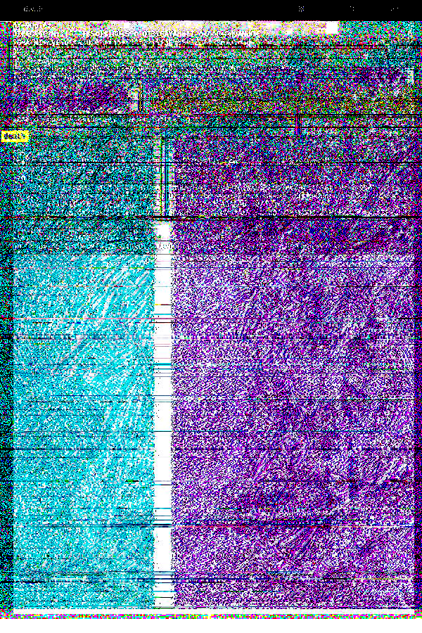
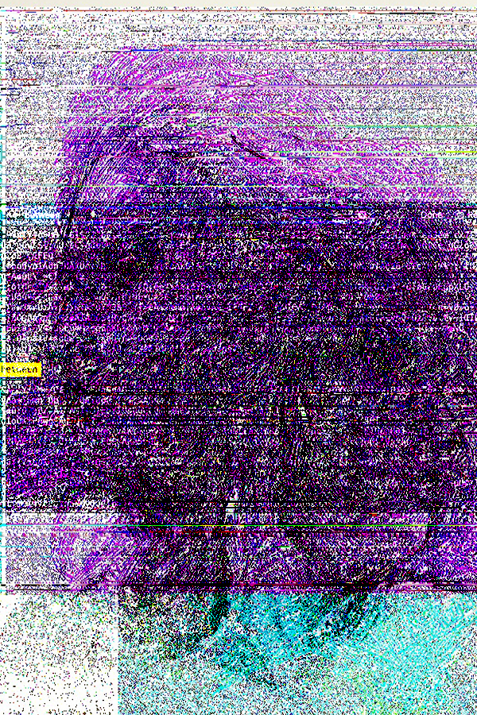
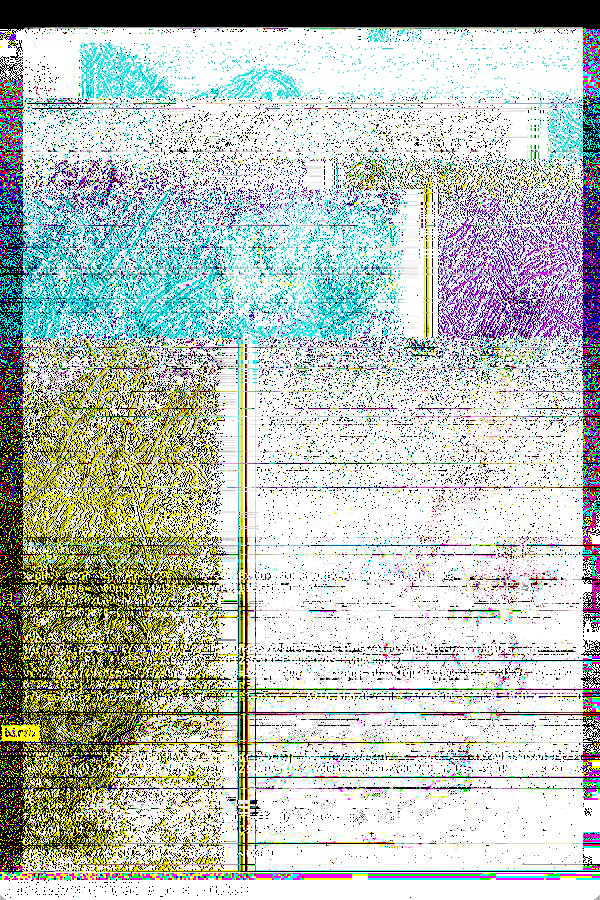

This piece utilizes mixed media traditional art, databending techniques and digital image manipulation methods to create a glitch-style triptych depicting a journey between birth and death. The original images are of a diptych inspired by religious artwork (Catholic saint statues) and a self portrait from 2022. I selected these images to be put together in conversation as a part of a larger series exploring and subverting religious art aesthetics in digital spaces. Growing up atheistic in a Roman Catholic family, much of my early exposures to art were of religious backgrounds, but my artistic interpretations remain secular. I aim to illustrate this tension between secularity, religion, familial bonds and tradition within this piece by inserting both my own artistic narrative (both figuratively and literally through the self portrait being positioned as the center image),utilizing digital imaging and databending techniques to further subvert the original images, and intermixing screenshots of the text editor to title the works.
Onyx and Ivory (2021) by Michaela Barker; Self Portrait (2022) by Michaela Barker